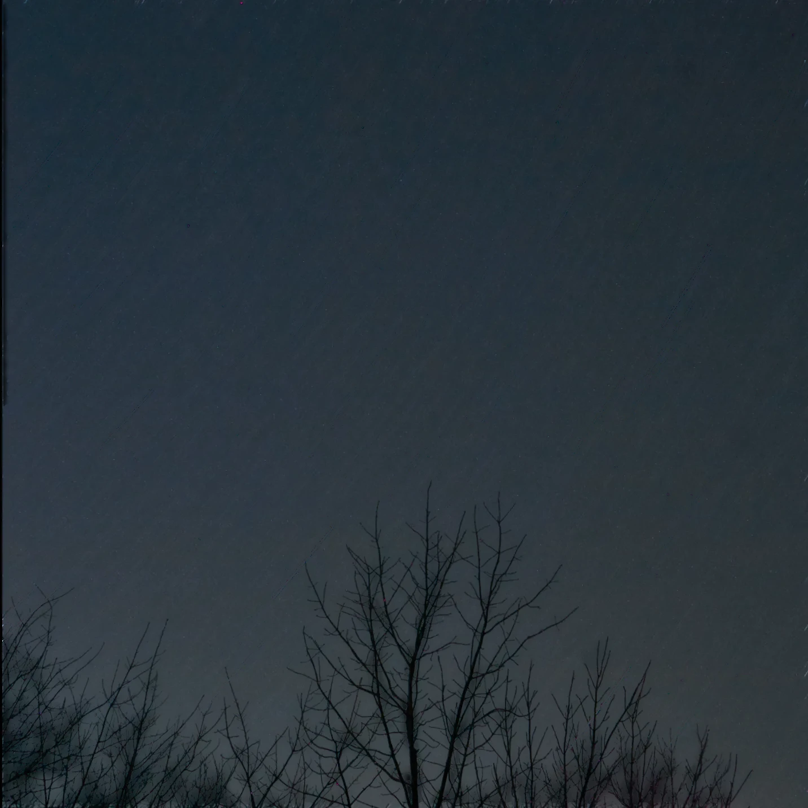
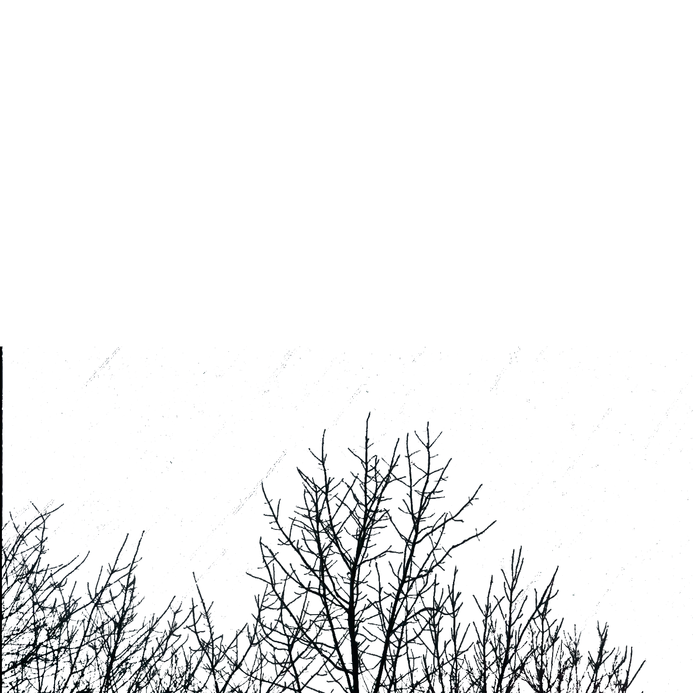

Trung Ha, PhD
Computational astrophysicist

I am a postdoctoral researcher at the Rochester Institute of Technology. I study turbulent processes in the universe, including black-hole accretion, reconnection in magnetized plasma, and the motion of young stars. My work combines numerical simulations, machine learning, and large language models to further our understanding of the universe.
Featured research
All projects
Black-hole accretion
Nested zoom-in simulations of multiphase gas and jet feedback around supermassive black holes.

aweSOM
Open-source software for identifying current sheets in turbulent magnetized plasma.

Stellar turbulence
Using young stars and gas to measure turbulence in nearby star-forming regions.